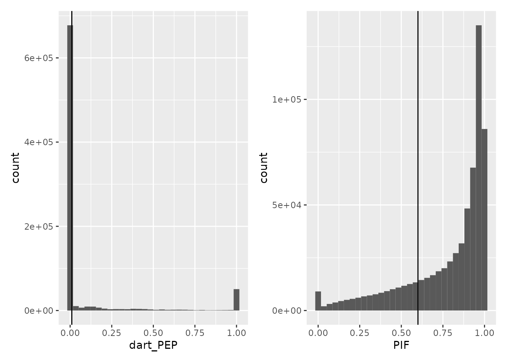
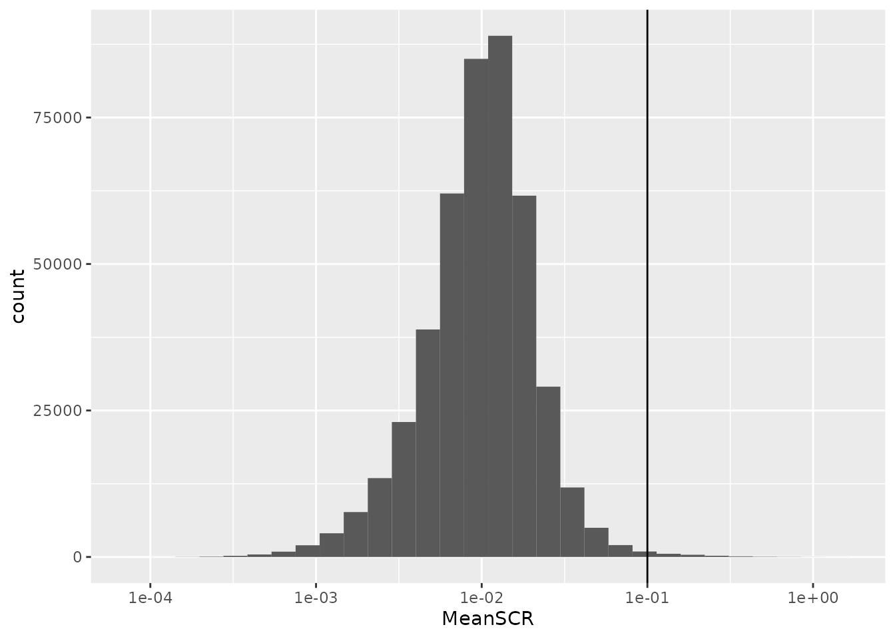
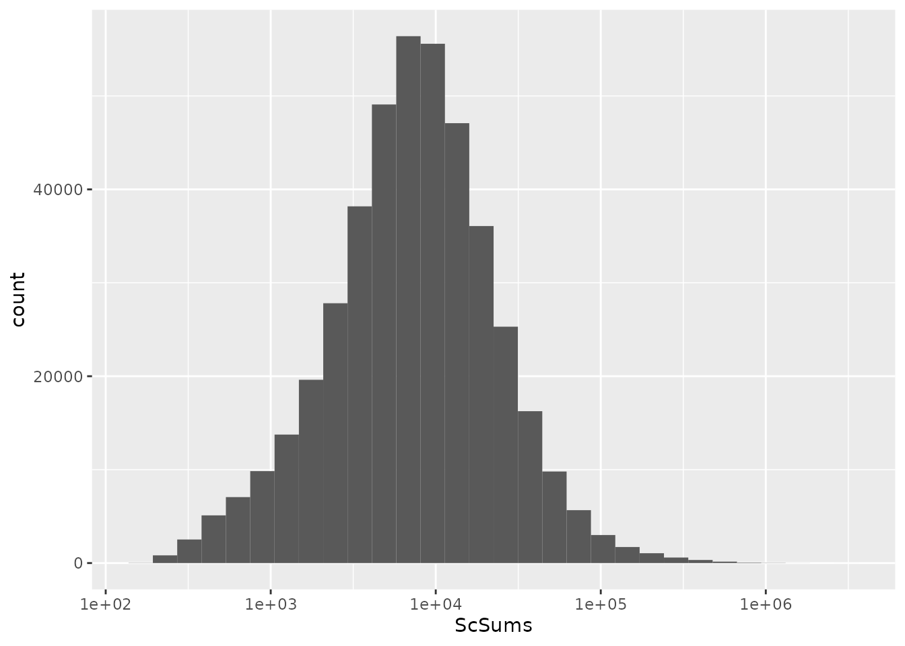
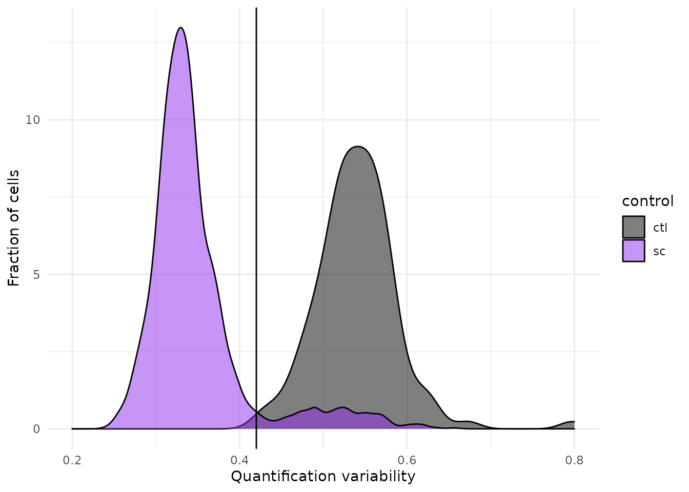
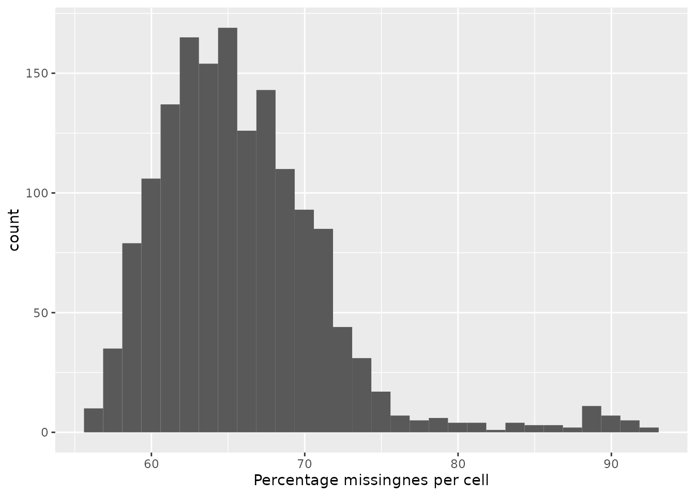
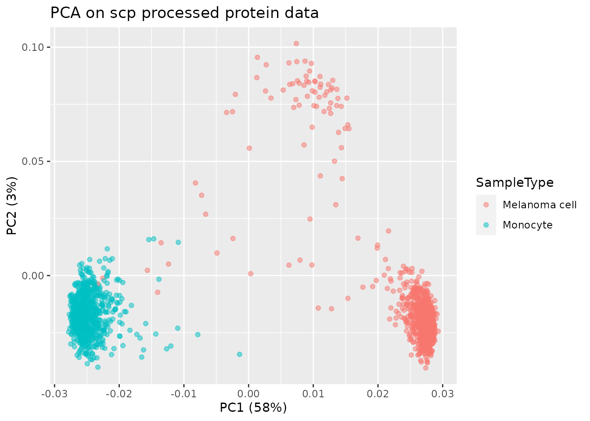
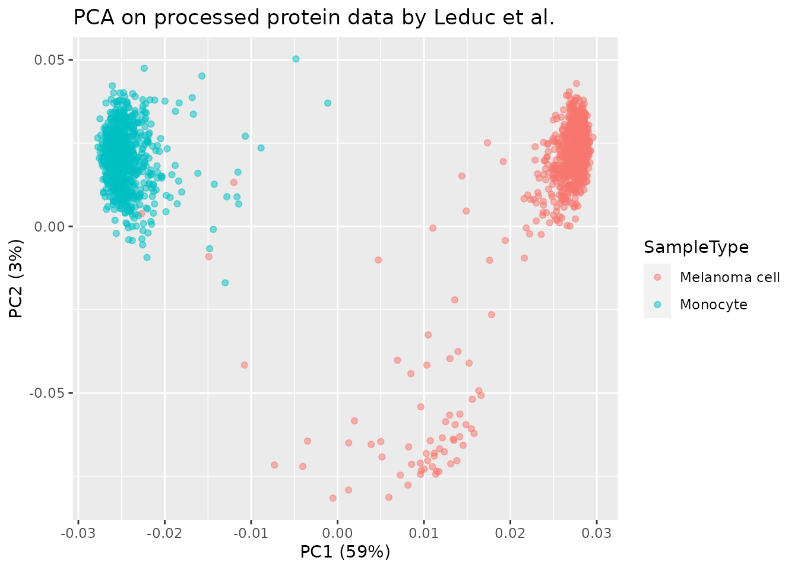
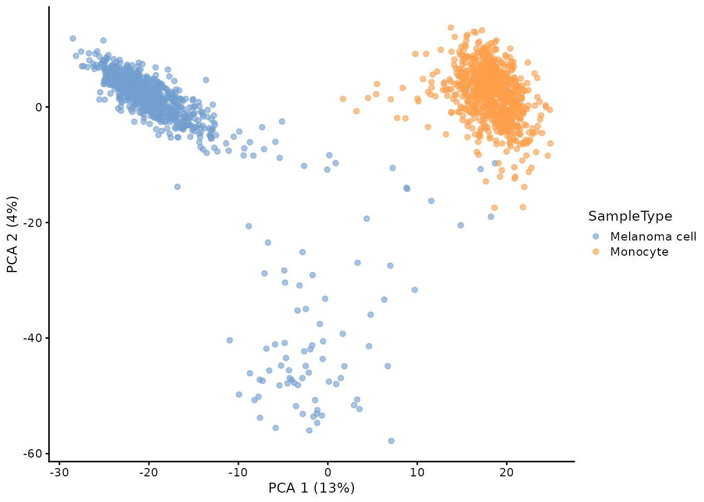

leduc2022.RmdnPOP (Leduc et al. 2022) is an upgrade of the SCoPE2 protocole (Specht et al. 2021 and Petelski et al. 2021), where the mPOP sample preparation method is replaced by the nPOP method. nPOP processes samples using the Cellenion dispensing device and uses DMSO as lysis reagent instead of a freeze-thaw procedure. They also include the prioritized data acquisition mode as described by Huffman et al. 2022.
Let’s first load the replication package to make use of some helper functions. Those functions are only meant for this replication vignette and are not designed for general use.
library("SCP.replication")scp and the SCoPE2 workflow
The code provided along with the article can be retrieved from this GitHub repository. The objective of this vignette is to replicate the analysis script while providing standardized, easy-to-read, and well documented code. Therefore, our first contribution is to formalize the data processing into a conceptual flow chart.
Overview of the processing workflow by Leduc et al.
This replication vignette relies on a data framework dedicated to SCP data analysis that combines two Bioconductor classes (Vanderaa et al. 2021):
SingleCellExperiment class provides an interface to
many cutting edge methods for single-cell analysisQFeatures class facilitates manipulation and
processing of MS-based quantitative data.The scp
vignette provides detailed information about the data structure. The
scp package extends the functionality of
QFeatures for single-cell application. scp
offers a standardized implementation for single-cell processing
methods.
The required packages for running this workflow are listed below.
scpdata and the leduc2022 dataset
We also implemented a data package called scpdata (@Vanderaa2022-qv). It distributes published SCP
datasets, such as the leduc2022 dataset. The datasets were
downloaded from the data source provided in the publication and
formatted to a QFeatures object so that it is compatible
with our software. The underlying data storage is based on the
ExperimentHub package that provides a cloud-based storage
infrastructure.
The leduc2022 dataset is provided at different levels of
processing:
scpdata.The workflow starts with the PSM table and will generate the peptide
and the protein data. The authors provided the PSM dataset as a tabular
text file called ev_updated.txt. Peptide and protein data
are shared as CSV files. We highly value the effort the authors have
made to publicly share all the data generated in their project, from raw
files to final expression tables (see the Slavov Lab website).
We formatted the leduc2022 dataset following our data
framework. The formatted data can be retrieved from the
scpdata package using the leduc2022()
function. All datasets in scpdata are called after the
first author and the date of publication.
leduc <- leduc2022()The data contain 138 different SingleCellExperiment
objects that we refer to as assays. Each assay contains
expression data along with feature metadata. Each row in an assay
represents a feature that can either be a PSM, a
peptide or a protein depending on the assay. Each column in an assay
represents a sample. In the leduc object,
samples are pooled using TMT-pro18 labeling, hence each assay contains
18 columns. Most samples are single-cells, but some samples are negative
controls, references, carriers,… Below, we show the overview of the
leduc object
leduc
## An instance of class QFeatures containing 138 assays:
## [1] eAL00219: SingleCellExperiment with 6269 rows and 18 columns
## [2] eAL00220: SingleCellExperiment with 6603 rows and 18 columns
## [3] eAL00221: SingleCellExperiment with 6511 rows and 18 columns
## ...
## [136] peptides_log: SingleCellExperiment with 12284 rows and 1543 columns
## [137] proteins_norm2: SingleCellExperiment with 2844 rows and 1543 columns
## [138] proteins_processed: SingleCellExperiment with 2844 rows and 1543 columns134 out of the 138 assays are PSM data, each assay corresponding to a separate MS run. Notice that the assays were acquired in 2 sample preparation and chromatographic batches.
table(LcBatch = leduc$lcbatch,
SamplePrepBatch = sub("AL.*", "", leduc$Set))
## SamplePrepBatch
## LcBatch e w
## A 0 1548
## C 864 0The dataset also contains a peptides,
peptides_log, proteins_norm and
proteins_processed assay. Those were provided by the
authors. The objective of this vignette is to replicate these assays
from the 134 PSM assays following the same procedure as the original
script but using standardized functionality.
We extract these latter assays and keep them for later benchmarking.
Using double brackets [[...]] extracts the desired assay as
a SingleCellExperiment object. On the other hand, using
simple brackets [row, col, assay] subsets the desired
elements/assays but preserves the QFeatures data
structure.
peptides_leduc <- leduc[["peptides"]]
peptides_log_leduc <- leduc[["peptides_log"]]
proteins_norm_leduc <- leduc[["proteins_norm2"]]
proteins_processed_leduc <- leduc[["proteins_processed"]]
leduc <- leduc[, , -(135:138)]
## Warning: 'experiments' dropped; see 'metadata'We will compare the replications by comparing the set of filtered features (peptides or proteins) and samples. This is performed using this function.
compareSets <- function(setleduc, setscp) {
allElements <- unique(c(setleduc, setscp))
table(leduc2022 = allElements %in% setleduc,
scp = allElements %in% setscp)
}We will also compare the replication based on the quantitative data. We again create a dedicated function to perform this.
compareQuantitativeData <- function(sceleduc, scescp) {
rows <- intersect(rownames(sceleduc),
rownames(scescp))
cols <- intersect(colnames(sceleduc),
colnames(scescp))
err <- assay(sceleduc)[rows, cols] - assay(scescp)[rows, cols]
data.frame(difference = as.vector(err[!is.na(err)])) %>%
ggplot() +
aes(x = difference) +
geom_histogram(bins = 50) +
xlab("nPOP - scp") +
scale_y_continuous(labels = scales::scientific) +
theme_minimal()
}After importing the data, Leduc et al. filter low-confidence PSMs.
Each PSM assay contains feature meta-information that are stored in the
assay rowData. The QFeatures package allows to
quickly filter the rows of an assay by using these information. The
available variables in the rowData are listed below for
each assay.
rowDataNames(leduc)
## CharacterList of length 134
## [["eAL00219"]] Sequence Length ... Leading.razor.protein.symbol
## [["eAL00220"]] Sequence Length ... Leading.razor.protein.symbol
## [["eAL00221"]] Sequence Length ... Leading.razor.protein.symbol
## [["eAL00222"]] Sequence Length ... Leading.razor.protein.symbol
## [["eAL00223"]] Sequence Length ... Leading.razor.protein.symbol
## [["eAL00224"]] Sequence Length ... Leading.razor.protein.symbol
## [["eAL00225"]] Sequence Length ... Leading.razor.protein.symbol
## [["eAL00226"]] Sequence Length ... Leading.razor.protein.symbol
## [["eAL00227"]] Sequence Length ... Leading.razor.protein.symbol
## [["eAL00228"]] Sequence Length ... Leading.razor.protein.symbol
## ...
## <124 more elements>We first remove spectra that are matched to contaminant proteins and reverse hits. We also remove PSMs that have been matched from impure spectra, that are spectra containing co-eluting peptides. These are identified based on the parental ion fraction (PIF), computed by MaxQuant. Finally, we also want to remove PSM with poor matching confidence, as defined by the false discovery rate (FDR) computed by DART-ID.
We can extract the information from the rowData of
several assays using the rbindRowData function. It takes
the rowData of interest and returns a single
DataFrame table with variables of interest. We extract such
a table for the different variables listed above to create a quality
control plot.
rd <- data.frame(rbindRowData(leduc, i = names(leduc)))
ggplot(rd) +
aes(x = dart_PEP) +
geom_histogram() +
geom_vline(xintercept = 0.01) +
ggplot(rd) +
aes(x = PIF) +
geom_histogram() +
geom_vline(xintercept = 0.6)
## Warning: Removed 181437 rows containing non-finite values (stat_bin).
We next remove the PSMs that are matched to potential contaminants
(Potential.contaminant is + and
Proteins starts with CON), reverse hits
(Reverse is + and
Leading.razor.protein starts with REV), noisy
spectra (PIF is missing or greater than 0.6) and
low-confidence spectra with at 1% FDR threshold (dart_qval
smaller than 0.01). We can perform this on our QFeatures
object using the filterFeatures() function. The different
pieces of information are directly accessed from the
rowData of each assay.
leduc <- filterFeatures(leduc, ~ Potential.contaminant != "+" &
!grepl("CON", Proteins) &
Reverse != "+" &
!grepl("REV", Leading.razor.protein) &
(is.na(PIF) | PIF > 0.6) &
dart_qval < 0.01)The PSMs are next filtered based on the sample to carrier ratio
(SCR), that is the TMT ion intensity of a single-cell sample divided by
the TMT ion intensity of the carrier (200 cell equivalent) acquired
during the same run as the sample. It is expected that the carrier
intensities are much higher than the single-cell intensities. We
implemented the computeSCR() function that computes the SCR
for each PSM averaged over all samples of interest in a given assay. A
PSM is removed when the mean SCR exceeds 10 %. To perform this, we need
to tell the function which columns are the samples of interest and which
column is the carrier. The colData of the
QFeatures object is used to define this.
table(leduc$SampleType)
##
## Carrier Melanoma cell Monocyte NegControl Reference
## 134 878 877 120 134
## Unused
## 269In this dataset, SampleType gives the type of sample
that is present in each TMT channel. There 5 types of samples:
Carrier) contain 200 cell
equivalents and are meant to boost the peptide identification rate.Reference) are used to
partially correct for between-run variation.Unused) are channels that are left
empty due to isotopic cross-contamination.NegControl) contain samples that
do not contain any cell but are processed as single-cell samples.Melanoma cell or Monocyte).The computeSCR function expects the user to provide a
pattern (following regular expression syntax) that uniquely identifies a
carrier channel in each run and the samples or blanks. The function will
store the mean SCR of each feature in the rowData of each
assay.
leduc <- computeSCR(leduc, names(leduc),
colvar = "SampleType",
samplePattern = "Mel|Macro",
carrierPattern = "Carrier",
sampleFUN = "mean",
rowDataName = "MeanSCR")Before applying the filter, we plot the distribution of the mean SCR.
rbindRowData(leduc, i = names(leduc)) %>%
data.frame %>%
ggplot(aes(x = MeanSCR)) +
geom_histogram() +
geom_vline(xintercept = 0.1) +
scale_x_log10()
A great majority of the PSMs have a mean SCR that is lower than 10%,
as expected. Since the mean SCR is stored in the rowData,
we can apply filterFeatures() on the object to remove PSMs
with high average SCR.
leduc <- filterFeatures(leduc, ~
!is.na(MeanSCR) & !is.infinite(MeanSCR) &
MeanSCR < 0.05)Finally, we remove PSM that have no signal in single-cell samples.
This is not explicitely implemented in scp. To add custom
information to rowData, you need to provide a list of
DataFrames. The name of the elements in the list should
correspond to the names of the assays where the rowData is
modified. The column names of the DataFrame indicate which
variable should be modified or added (if they do not exist yet). So, for
each assay, we compute the summed signal in single-cells (and negative
controls) and store the results in a DataFrame.
sums <- lapply(names(leduc), function(i) {
sce <- leduc[[i]]
sel <- grep("Mel|Macro|Neg", colData(leduc)[colnames(sce), "SampleType"])
x <- assay(sce)[, sel, drop = FALSE]
rs <- rowSums(x, na.rm = TRUE)
DataFrame(ScSums = rs)
})The list of DataFrame is named after the corresponding
assays and the rowData of the leduc object is
modified.
To verify this new piece of data was correctly added, we plot the summed signal for each PSM.
rbindRowData(leduc, i = names(leduc)) %>%
data.frame %>%
ggplot(aes(x = ScSums)) +
geom_histogram() +
scale_x_log10()
We apply the final filter using filterFeatures().
leduc <- filterFeatures(leduc, ~ ScSums != 0)In order to partially correct for between-run variation, Leduc et al.
compute relative reporter ion intensities. This means that intensities
measured for single-cells are divided by the reference channel. We use
the divideByReference() function that divides channels of
interest by the reference channel. Similarly to computeSCR,
we can point to the samples and the reference columns in each assay
using the annotation contained in the colData. We will here
divide all columns (using the regular expression wildcard
.) by the reference channel (Reference).
leduc <- divideByReference(leduc, i = names(leduc),
colvar = "SampleType",
samplePattern = ".",
refPattern = "Reference")Notice that when taking all samples we also include the reference channel itself. Hence, from now on, the reference channels will contain only ones.
Now that the PSM assays are processed, we can aggregate them to
peptides. This is performed using the
aggregateFeaturesOverAssays() function. This is a wrapper
function in scp that sequentially calls the
aggregateFeatures from the QFeatures package
over the different assays. For each assay, the function aggregates
several PSMs into a unique peptide given an aggregating variable in the
rowData (peptide sequence) and a user-supplied aggregating
function (the median for instance). Regarding the aggregating function,
the original analysis removes duplicated peptide sequences per run by
taking the first non-missing value. While better alternatives are
documented in QFeatures::aggregateFeatures, we still use
this approach for the sake of replication and for illustrating that
custom functions can be applied.
The aggregated peptide assays must be given a name. We here used the
original names with peptides_ at the start.
We now have all the required information to aggregate the PSMs in the different batches to peptides.
leduc <- aggregateFeaturesOverAssays(leduc,
i = names(leduc),
fcol = "modseq",
name = peptideAssays,
fun = remove.duplicates)Under the hood, the QFeatures architecture preserves the
relationship between the aggregated assays. See ?AssayLinks
for more information on relationships between assays. Notice that
aggregateFeaturesOverAssays created as many new assays as
the number of supplied assays.
leduc
## An instance of class QFeatures containing 268 assays:
## [1] eAL00219: SingleCellExperiment with 3555 rows and 18 columns
## [2] eAL00220: SingleCellExperiment with 3981 rows and 18 columns
## [3] eAL00221: SingleCellExperiment with 3785 rows and 18 columns
## ...
## [266] peptides_wAL00284: SingleCellExperiment with 3211 rows and 18 columns
## [267] peptides_wAL00285: SingleCellExperiment with 3277 rows and 18 columns
## [268] peptides_wAL00286: SingleCellExperiment with 3411 rows and 18 columnsUp to now, we kept the data belonging to each MS run in separate
assays. We now combine all batches into a single assay. This can easily
be done using the joinAssays() function from the
QFeatures package.
We need to account for an issue in the data.
joinAssays() will only keep the metadata variables that
have the same value between matching rows. However, some peptide
sequences map to one protein in one run and to another protein in
another run. Hence, the protein sequence is not constant for all
peptides and is removed during joining. It is important we keep the
protein sequence in the rowData since we will later need it
to aggregate peptides to proteins. To avoid this issue, we replace the
problematic peptides to protein mappings through a majority vote.
## Generate a list of DataFrames with the information to modify
rbindRowData(leduc, i = grep("^pep", names(leduc))) %>%
data.frame %>%
group_by(modseq) %>%
## The majority vote happens here
mutate(Leading.razor.protein.symbol =
names(sort(table(Leading.razor.protein),
decreasing = TRUE))[1]) %>%
select(modseq, Leading.razor.protein.symbol) %>%
filter(!duplicated(modseq, Leading.razor.protein.symbol)) ->
ppMap
consensus <- lapply(peptideAssays, function(i) {
ind <- match(rowData(leduc[[i]])$modseq, ppMap$modseq)
DataFrame(Leading.razor.protein.symbol =
ppMap$Leading.razor.protein.symbol[ind])
})
## Name the list
names(consensus) <- peptideAssays
## Modify the rowData
rowData(leduc) <- consensusAnother important step before we join the assays is to replace zero
and infinite values by NAs. The zeros can be biological
zeros or technical zeros and differentiating between the two types is a
difficult task, they are therefore better considered as missing. The
infinite values arose during the normalization by the reference because
the channel values are divide by a zero from the reference channel. This
artefact could easily be avoided if we had replace the zeros by
NAs at the beginning of the workflow, what we strongly
recommend for future analyses.
The infIsNA() and the zeroIsNA() functions
automatically detect infinite and zero values, respectively, and replace
them with NAs. Those two functions are provided by the
QFeatures package.
Now that the peptides are correctly matched to proteins and missing values are correctly formatted, we can join the assays.
leduc <- joinAssays(leduc,
i = peptideAssays,
name = "peptides")joinAssays has created a new assay called
peptides that combines the previously aggregated peptide
assays.
leduc
## An instance of class QFeatures containing 269 assays:
## [1] eAL00219: SingleCellExperiment with 3555 rows and 18 columns
## [2] eAL00220: SingleCellExperiment with 3981 rows and 18 columns
## [3] eAL00221: SingleCellExperiment with 3785 rows and 18 columns
## ...
## [267] peptides_wAL00285: SingleCellExperiment with 3277 rows and 18 columns
## [268] peptides_wAL00286: SingleCellExperiment with 3411 rows and 18 columns
## [269] peptides: SingleCellExperiment with 20480 rows and 2412 columnsLeduc et al. proceed with filtering the single-cells. The filtering
is mainly based on the median coefficient of variation (CV) per cell.
The median CV measures the consistency of quantification for a group of
peptides that belong to a protein. We remove cells that exhibit high
median CV over the different proteins. We compute the median CV per cell
using the medianCVperCell() function from the
scp package. The function takes the protein information
from the rowData of the assays that will tell how to group
the features (peptides) when computing the CV. Note that we supply the
peptide assays before joining in a single assays
(i = peptideAssays). This is because SCoPE2 performs a
custom normalization (norm = "SCoPE2"). Each row in an
assay is normalized by a scaling factor. This scaling factor is the row
mean after dividing the columns by the median. The authors retained CVs
that are computed using at least 3 peptides (nobs = 3).
leduc <- medianCVperCell(leduc,
i = peptideAssays,
groupBy = "Leading.razor.protein.symbol",
nobs = 3,
na.rm = TRUE,
colDataName = "MedianCV",
norm = "SCoPE2")
## Warning in medianCVperCell(leduc, i = peptideAssays, groupBy = "Leading.razor.protein.symbol", : The median CV could not be computed for one or more samples. You may want to try a smaller value for 'nobs'.The computed CVs are stored in the colData. We can now
filter cells that have reliable quantifications. The negative controls
are not expected to have reliable quantifications and hence can be used
to estimate a null distribution of the CV. This distribution helps
defining a threshold that filters out single-cells that contain noisy
quantification.
colData(leduc) %>%
data.frame %>%
filter(grepl("Mono|Mel|Neg", SampleType)) %>%
mutate(control = ifelse(grepl("Neg", SampleType), "ctl", "sc")) %>%
ggplot() +
aes(x = MedianCV,
fill = control) +
geom_density(alpha = 0.5, adjust = 1) +
geom_vline(xintercept = 0.42) +
xlim(0.2, 0.8) +
theme_minimal() +
scale_fill_manual(values = c( "black", "purple2")) +
xlab("Quantification variability") +
ylab("Fraction of cells")
## Warning: Removed 31 rows containing non-finite values (stat_density).
We can see that the protein quantification for single-cells are much more consistent within single-cell channels than within blank channels. A threshold of 0.42 best separates single-cells from empty channels.
We keep the cells that pass the median CV threshold. Furthermore, we
keep melanoma cells and monocytes as those represent the samples of
interest. We can extract the sample names that pass the CV and sample
type filters using the subsetByColData() function.
At this stage of the processing, the last assay should be similar to
the peptides_leduc data provided by the authors. Let’s
compare the filtered cells.
compareSets(colnames(peptides_leduc),
colnames(leduc[["peptides"]]))
## scp
## leduc2022 FALSE TRUE
## FALSE 0 27
## TRUE 7 1549There is an excellent agreement between the the original and the replicated vignette. Let’s do the same for the filtered peptides.
compareSets(rownames(peptides_leduc),
rownames(leduc[["peptides"]]))
## scp
## leduc2022 FALSE TRUE
## FALSE 0 27
## TRUE 351 20453Finally let’s compare the quantitative data
compareQuantitativeData(peptides_leduc, leduc[["peptides"]])
The replication is close to perfect. Note however that this vignette is more stringent with respect to the number of selected peptides. We cannot explain this difference.
The columns (samples) then the rows (peptides) are normalized by
dividing the relative intensities by the median relative intensities.
The column normalization is implemented as the normalize()
function with the argument method = div.median. The row
normalization is not available from normalizet(), but is
easily performed using the sweep function from the
QFeatures package that is inspired from the
base::sweep function.
## Scale column with median
leduc <- normalize(leduc,
i = "peptides",
method = "div.median",
name = "peptides_norm1")
## Scale rows with median
leduc <- sweep(leduc,
i = "peptides_norm1",
name = "peptides_norm2",
MARGIN = 1,
FUN = "/",
STATS = rowMedians(assay(leduc[["peptides_norm1"]]),
na.rm = TRUE))Each normalization step is stored in a separate assay. An important aspect to note here is that
Peptides that contain many missing values are not informative.
Therefore, the authors remove those with more than 99 % missing data.
This is done using the filterNA() function from
QFeatures.
leduc <- filterNA(leduc,
i = "peptides_norm2",
pNA = 0.99)They also remove cells with more than 99 % missing data. This is
performed by first computing the amount of missing data in the assay
using nNA(). We then subset the cells that meet the
criterion.
nnaRes <- nNA(leduc, "peptides_norm2")
sel <- nnaRes$nNAcols$pNA < 99
leduc[["peptides_norm2"]] <- leduc[["peptides_norm2"]][, sel]
## Warning in replaceAssay(x = x, y = value, i = i): Links between assays were
## lost/removed during replacement. See '?addAssayLink' to restore them manually.Peptide data is log2-transformed before aggregating to proteins. This
is performed by the logTransform() function from
QFeatures.
leduc <- logTransform(leduc,
base = 2,
i = "peptides_norm2",
name = "peptides_log")At this stage of the processing, the last assay should be similar to
the peptides_log_leduc data provided by the authors. Let’s
compare the filtered cells.
compareSets(colnames(peptides_log_leduc),
colnames(leduc[["peptides_log"]]))
## scp
## leduc2022 FALSE TRUE
## FALSE 0 27
## TRUE 2 1541There is an excellent agreement between the the original and the replicated vignette. Let’s do the same for the filtered peptides.
compareSets(rownames(peptides_log_leduc),
rownames(leduc[["peptides_log"]]))
## scp
## leduc2022 FALSE TRUE
## FALSE 0 18
## TRUE 51 12233Notice here that most peptides that this vignette removed earlier are now also removed by the original analysis. There is an excellent agreement as well between selected peptides. Finally let’s compare the quantitative data.
compareQuantitativeData(peptides_log_leduc, leduc[["peptides_log"]])
The agreement is still very good, with a sharp peak around 0. However, we can see that the range of differences starts to increase, probably because numerical differences propagate as we progress through the data processing.
Similarly to aggregating PSM data to peptide data, we can aggregate
peptide data to protein data using the aggregateFeatures
function. Note that we here use the median as a summarizing
function.
leduc <- aggregateFeatures(leduc,
i = "peptides_log",
name = "proteins",
fcol = "Leading.razor.protein.symbol",
fun = matrixStats::colMedians,
na.rm = TRUE)Normalization is performed similarly to peptide normalization. We use the same functions, but since the data were log-transformed at the peptide level, we subtract by the median instead of dividing.
## Center columns with median
leduc <- normalize(leduc,
i = "proteins",
method = "center.median",
name = "proteins_norm1")
## Scale rows with median
leduc <- sweep(leduc,
i = "proteins_norm1",
name = "proteins_norm2",
MARGIN = 1,
FUN = "-",
STATS = rowMedians(assay(leduc[["proteins_norm1"]]),
na.rm = TRUE))At this stage of the processing, the last assay should be similar to
the proteins_norm_leduc data provided by the authors. Let’s
compare the filtered cells.
compareSets(colnames(proteins_norm_leduc),
colnames(leduc[["proteins_norm2"]]))
## scp
## leduc2022 FALSE TRUE
## FALSE 0 27
## TRUE 2 1541There is an excellent agreement between the the original and the replicated vignette. Let’s do the same for the filtered proteins.
compareSets(rownames(proteins_norm_leduc),
rownames(leduc[["proteins_norm2"]]))
## scp
## leduc2022 FALSE TRUE
## FALSE 0 2837
## TRUE 2844 0There is an almost perfect agreement between the selected proteins. selected Finally let’s compare the quantitative data.
compareQuantitativeData(proteins_norm_leduc, leduc[["proteins_norm2"]])Again, there is a very sharp peak around 0.
The protein data is majorily composed of missing values. The graph below shows the distribution of the proportion missingness in cells. Cells contain on average 65 % missing values.
data.frame(pNA = nNA(leduc, "proteins_norm2")$nNAcols$pNA) %>%
ggplot(aes(x = pNA)) +
geom_histogram() +
xlab("Percentage missingnes per cell")
The missing data is imputed using K nearest neighbors. The authors
run KNN with k = 3. We made a wrapper around the author’s code to apply
imputation to our QFeatures object.
leduc <- imputeKnnSCoPE2(leduc,
i = "proteins_norm2",
name = "proteins_impd",
k = 3)QFeatures provides the impute function that
serves as an interface to different imputation algorithms among which
the KNN algorithm from impute::impute.knn. However, the KNN
implementation in the oringal analysis and in impute.knn
are different. Leduc et al. perform KNN imputation in the sample space,
meaning that data from neighbouring cells are used to impute the central
cell, whereas impute::impute.knn performs KNN imputation in
the feature space, meaning that data from neighbouring features are used
to impute the missing values from the central features. We provide the
code for KNN imputation with QFeatures but do not run in
order to replicate the original analysis.
leduc <- impute(leduc,
i = "proteins_norm2",
method = "knn",
k = 3, rowmax = 1, colmax= 1,
maxp = Inf, rng.seed = 1234)The next step is to correct for the remaining batch effects. The data
were acquired as a series of MS runs. Recall we had 134 assays at the
beginning of the workflow. Each MS run can be subjected to technical
perturbations that lead to differences in the data. Furthermore, TMT
labeling can also influence the quantification. These effects must be
accounted for to avoid attributing biological effects to technical
effects. The limma algorithm (CITE-Ritchie) is used by
Leduc et al. to correct for batch effects. It can take up to 2 batch
variables, in this case the MS acquisition batch and the TMT channel,
while protecting for variables of interest, the sample type in this
case. All the information is contained in the colData of
the QFeatures object. We first extract the assays with the
associated colData.
sce <- getWithColData(leduc, "proteins_impd")
## Warning: 'experiments' dropped; see 'metadata'We next create the design matrix. We then perform the batch
correction and overwrite the data matrix. Recall the data matrix can be
accessed using the assay function.
model <- model.matrix(~ SampleType, data = colData(sce))
assay(sce) <- removeBatchEffect(x = assay(sce),
batch = sce$lcbatch,
batch2 = sce$Channel,
design = model)Finally, we add the batch corrected assay to the
QFeatures object and create the feature links.
leduc <- addAssay(leduc, y = sce, name = "proteins_batchC")
leduc <- addAssayLinkOneToOne(leduc, from = "proteins_impd",
to = "proteins_batchC")The very last step of the data processing workflow is a new round of normalization.
## Center columns with median
leduc <- normalize(leduc,
i = "proteins_batchC",
method = "center.median",
name = "proteins_batchC_norm1")
## Scale rows with median
leduc <- sweep(leduc,
i = "proteins_batchC_norm1",
name = "proteins_processed",
MARGIN = 1,
FUN = "-",
STATS = rowMedians(assay(leduc[["proteins_batchC_norm1"]]),
na.rm = TRUE))At the end of the processing, the last assay should be similar to the
proteins_processed_leduc data provided by the authors.
Let’s compare the filtered cells.
compareSets(colnames(proteins_processed_leduc),
colnames(leduc[["proteins_processed"]]))
## scp
## leduc2022 FALSE TRUE
## FALSE 0 27
## TRUE 2 1541There is an excellent agreement between the selected cells from the original and this vignette. Let’s do the same for the filtered proteins.
compareSets(rownames(proteins_processed_leduc),
rownames(leduc[["proteins_processed"]]))
## scp
## leduc2022 FALSE TRUE
## FALSE 0 2837
## TRUE 2844 0The agreement is also excellent between filtered proteins. Finally let’s compare the quantitative data
compareQuantitativeData(proteins_processed_leduc,
leduc[["proteins_processed"]])The differences are still sharply peaked around 0. However the differences are more spread and the range is larger compared to the previous steps.
Overall, we can see good replication of the data processing, although early differences seem to get amplified as we progress through the different processing steps. We next compare the dimension reduction results to get a more qualitative assessment.
We run the same PCA procedure as performed by the authors, that is a weighted PCA where the weight for a protein is defined as the summed correlation with the other proteins.
sce <- getWithColData(leduc, "proteins_processed")
## Warning: 'experiments' dropped; see 'metadata'
## Warning: Ignoring redundant column names in 'colData(x)':
pcaRes <- pcaSCoPE2(sce)
## Compute percent explained variance
pcaPercentVar <- round(pcaRes$values[1:2] / sum(pcaRes$values) * 100)
## Plot PCA
data.frame(PC = pcaRes$vectors[, 1:2],
colData(sce)) %>%
ggplot() +
aes(x = PC.1,
y = PC.2,
colour = SampleType) +
geom_point(alpha = 0.5) +
xlab(paste0("PC1 (", pcaPercentVar[1], "%)")) +
ylab(paste0("PC2 (", pcaPercentVar[2], "%)"))+
ggtitle("PCA on scp processed protein data")
The PCA plot is very similar to the published PCA plot.
pcaResLeduc <- pcaSCoPE2(proteins_processed_leduc)
## Compute percent explained variance
pcaPercentVar <- round(pcaResLeduc$values[1:2] / sum(pcaResLeduc$values) * 100)
## Plot PCA
data.frame(PC = pcaResLeduc$vectors[, 1:2],
colData(proteins_processed_leduc)) %>%
ggplot() +
aes(x = PC.1,
y = PC.2,
colour = SampleType) +
geom_point(alpha = 0.5) +
xlab(paste0("PC1 (", pcaPercentVar[1], "%)")) +
ylab(paste0("PC2 (", pcaPercentVar[2], "%)")) +
ggtitle("PCA on processed protein data by Leduc et al.")
Here again we can see the replicated PCA from this vignette is very similar to the PCA published by the authors.
Using standard PCA, we obtain the same cell patterns although the explained variance differs.
library(scater)
## Perform PCA, see ?runPCA for more info about arguments
runPCA(sce, ncomponents = 50,
ntop = Inf,
scale = TRUE,
exprs_values = 1,
name = "PCA") %>%
## Plotting is performed in a single line of code
plotPCA(colour_by = "SampleType")
In this vignette, we have demonstrated that the scp
package is able to accurately reproduce the analysis published by Leduc
et al. We not only support the reliability of the published work, but we
also offer a formalization and standardization of the pipeline by means
of easy-to-read and highly documented code. This workflow can serve as a
starting ground to improve upon the current methods and to design new
modelling tools dedicated to single-cell proteomics.
You can reproduce this vignette using Docker:
docker pull cvanderaa/scp_replication_docker:v1
docker run \
-e PASSWORD=bioc \
-p 8787:8787 \
cvanderaa/scp_replication_docker:v1Open your browser and go to http://localhost:8787. The USER is rstudio
and the password is bioc. You can find the vignette in the
vignettes folder.
See the website home page for more information.
The system details of the machine that built the vignette are:
## Machine: Linux (5.15.0-48-generic)
## R version: R.4.2.1 (svn: 82513)
## RAM: 16.5 GB
## CPU: 16 core(s) - 11th Gen Intel(R) Core(TM) i7-11800H @ 2.30GHz
sessionInfo()
## R version 4.2.1 (2022-06-23)
## Platform: x86_64-pc-linux-gnu (64-bit)
## Running under: Ubuntu 20.04.4 LTS
##
## Matrix products: default
## BLAS: /usr/lib/x86_64-linux-gnu/blas/libblas.so.3.9.0
## LAPACK: /usr/lib/x86_64-linux-gnu/lapack/liblapack.so.3.9.0
##
## locale:
## [1] LC_CTYPE=en_US.UTF-8 LC_NUMERIC=C
## [3] LC_TIME=en_US.UTF-8 LC_COLLATE=en_US.UTF-8
## [5] LC_MONETARY=en_US.UTF-8 LC_MESSAGES=en_US.UTF-8
## [7] LC_PAPER=en_US.UTF-8 LC_NAME=C
## [9] LC_ADDRESS=C LC_TELEPHONE=C
## [11] LC_MEASUREMENT=en_US.UTF-8 LC_IDENTIFICATION=C
##
## attached base packages:
## [1] stats4 stats graphics grDevices utils datasets methods
## [8] base
##
## other attached packages:
## [1] benchmarkme_1.0.8 scater_1.25.7
## [3] scuttle_1.7.4 patchwork_1.1.2
## [5] forcats_0.5.2 stringr_1.4.1
## [7] dplyr_1.0.10 purrr_0.3.4
## [9] readr_2.1.3 tidyr_1.2.1
## [11] tibble_3.1.8 ggplot2_3.3.6
## [13] tidyverse_1.3.2 limma_3.53.10
## [15] SCP.replication_0.2.1 SingleCellExperiment_1.19.1
## [17] scpdata_1.5.4 ExperimentHub_2.5.0
## [19] AnnotationHub_3.5.2 BiocFileCache_2.5.0
## [21] dbplyr_2.2.1 scp_1.7.4
## [23] QFeatures_1.7.3 MultiAssayExperiment_1.23.9
## [25] SummarizedExperiment_1.27.3 Biobase_2.57.1
## [27] GenomicRanges_1.49.1 GenomeInfoDb_1.33.7
## [29] IRanges_2.31.2 S4Vectors_0.35.4
## [31] BiocGenerics_0.43.4 MatrixGenerics_1.9.1
## [33] matrixStats_0.62.0 BiocStyle_2.25.0
##
## loaded via a namespace (and not attached):
## [1] utf8_1.2.2 reticulate_1.26
## [3] tidyselect_1.1.2 RSQLite_2.2.17
## [5] AnnotationDbi_1.59.1 grid_4.2.1
## [7] BiocParallel_1.31.12 munsell_0.5.0
## [9] ScaledMatrix_1.5.1 codetools_0.2-18
## [11] ragg_1.2.3 withr_2.5.0
## [13] colorspace_2.0-3 filelock_1.0.2
## [15] highr_0.9 knitr_1.40
## [17] labeling_0.4.2 GenomeInfoDbData_1.2.9
## [19] bit64_4.0.5 farver_2.1.1
## [21] rprojroot_2.0.3 vctrs_0.4.2
## [23] generics_0.1.3 xfun_0.33
## [25] doParallel_1.0.17 R6_2.5.1
## [27] ggbeeswarm_0.6.0 clue_0.3-61
## [29] rsvd_1.0.5 locfit_1.5-9.6
## [31] MsCoreUtils_1.9.1 AnnotationFilter_1.21.0
## [33] bitops_1.0-7 cachem_1.0.6
## [35] DelayedArray_0.23.2 assertthat_0.2.1
## [37] promises_1.2.0.1 scales_1.2.1
## [39] googlesheets4_1.0.1 beeswarm_0.4.0
## [41] gtable_0.3.1 beachmat_2.13.4
## [43] OrgMassSpecR_0.5-3 benchmarkmeData_1.0.4
## [45] sva_3.45.0 rlang_1.0.6
## [47] genefilter_1.79.0 systemfonts_1.0.4
## [49] splines_4.2.1 lazyeval_0.2.2
## [51] gargle_1.2.1 broom_1.0.1
## [53] BiocManager_1.30.18 yaml_2.3.5
## [55] modelr_0.1.9 backports_1.4.1
## [57] httpuv_1.6.6 tools_4.2.1
## [59] bookdown_0.29 ellipsis_0.3.2
## [61] jquerylib_0.1.4 Rcpp_1.0.9
## [63] sparseMatrixStats_1.9.0 zlibbioc_1.43.0
## [65] RCurl_1.98-1.9 viridis_0.6.2
## [67] cowplot_1.1.1 haven_2.5.1
## [69] ggrepel_0.9.1 cluster_2.1.4
## [71] fs_1.5.2 magrittr_2.0.3
## [73] reprex_2.0.2 googledrive_2.0.0
## [75] ProtGenerics_1.29.0 hms_1.1.2
## [77] mime_0.12 evaluate_0.16
## [79] xtable_1.8-4 XML_3.99-0.11
## [81] readxl_1.4.1 gridExtra_2.3
## [83] compiler_4.2.1 crayon_1.5.2
## [85] htmltools_0.5.3 mgcv_1.8-40
## [87] later_1.3.0 tzdb_0.3.0
## [89] lubridate_1.8.0 DBI_1.1.3
## [91] MASS_7.3-58.1 rappdirs_0.3.3
## [93] Matrix_1.5-1 cli_3.4.1
## [95] parallel_4.2.1 igraph_1.3.5
## [97] pkgconfig_2.0.3 pkgdown_2.0.6
## [99] foreach_1.5.2 xml2_1.3.3
## [101] annotate_1.75.0 vipor_0.4.5
## [103] bslib_0.4.0 XVector_0.37.1
## [105] rvest_1.0.3 digest_0.6.29
## [107] Biostrings_2.65.6 rmarkdown_2.16
## [109] cellranger_1.1.0 edgeR_3.39.6
## [111] DelayedMatrixStats_1.19.1 curl_4.3.2
## [113] shiny_1.7.2 lifecycle_1.0.2
## [115] nlme_3.1-159 jsonlite_1.8.2
## [117] BiocNeighbors_1.15.1 desc_1.4.2
## [119] viridisLite_0.4.1 fansi_1.0.3
## [121] pillar_1.8.1 lattice_0.20-45
## [123] KEGGREST_1.37.3 fastmap_1.1.0
## [125] httr_1.4.4 survival_3.4-0
## [127] interactiveDisplayBase_1.35.0 glue_1.6.2
## [129] iterators_1.0.14 png_0.1-7
## [131] BiocVersion_3.16.0 bit_4.0.4
## [133] stringi_1.7.8 sass_0.4.2
## [135] BiocBaseUtils_0.99.12 blob_1.2.3
## [137] textshaping_0.3.6 BiocSingular_1.13.1
## [139] memoise_2.0.1 irlba_2.3.5.1This vignette is distributed under a CC BY-SA licence licence.